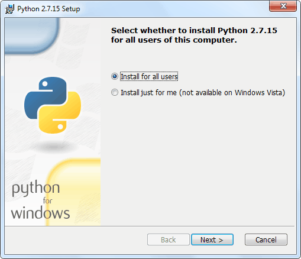

Программирование ESP8266 в Arduino IDE «по воздуху» (OTA, Over The Air)
Программирование ESP8266 в Arduino IDE «по воздуху» (OTA, Over The Air)Программирование ESP8266 в
Arduino IDE «по воздуху» (OTA,
Over The Air)
Добавлено 15 августа 2020 в 13:58
Сохранить или поделиться
Фантастической особенностью любого микроконтроллера с поддержкой Wi-Fi, такого как ESP8266 NodeMCU, является возможность обновления его прошивки по беспроводной сети. Это называется программированием «по воздуху» (OTA, Over-The-Air).Программирование ESP8266 в Arduino IDE «по воздуху» (OTA, Over The Air)
Что такое OTA программирование ESP8266?
OTA программирование позволяет обновлять/загружать новую программу в ESP8266 с помощью Wi-Fi вместо того, чтобы требовать от пользователя подключить ESP8266 к компьютеру через USB.
Функциональность OTA чрезвычайно полезна в случае отсутствия физического доступа к модулю ESP. Это помогает сократить время, затрачиваемое на обновление каждого модуля ESP при технической поддержке.
Одной из важных особенностей OTA является то, что один центральный объект может отправлять обновления нескольким модулям ESP, использующим одну и ту же сеть.
Единственным недостатком является то, что вам нужно для OTA добавлять дополнительный код в каждый загружаемый скетч, чтобы в следующем обновлении вы смогли снова использовать OTA.
3 простых шага по использованию OTA с ESP8266
Шаг 1. Установка Python версии 2.7.x
Чтобы использовать функциональность OTA, вам необходимо установить Python версии 2.7.x, если он еще не установлен на вашем компьютере.
Перейдите на официальный сайт Python и загрузите 2.7.x (конкретный релиз) для Windows (установщик MSI).Рисунок 1 – Скачать Python 2.7.x
Откройте установщик и следуйте указаниям мастера установки.Рисунок 2 – Установка Python 2.7.x на ПК
В разделе настройки Python 2.7.x убедитесь, что включен последний параметр «Add python.exe to Path» (добавить python.exe в путь). Рисунок 3 – Включите добавление python.exe в путь при установке Python
Рисунок 3 – Включите добавление python.exe в путь при установке Python
Шаг 2. Процедура загрузки скетча OTA через последовательный интерфейс
Заводской образ в ESP8266 не поддерживает возможность обновления через OTA. Поэтому вам нужно сначала загрузить на ESP8266 прошивку OTA через последовательный интерфейс.
Этот шаг обязателен для первой прошивки, чтобы вы могли выполнять следующие обновления/загрузки по беспроводной сети.
Дополнение ESP8266 для Arduino IDE поставляется с библиотекой OTA и примером BasicOTA. Вы можете получить к нему доступ через Файл → Примеры → ArduinoOTA → BasicOTA.Рисунок 4 – Откройте скетч BasicOTA в Arduino IDE
Должен загрузиться следующий код. Но, прежде чем начать загружать скетч в модуль, вам нужно внести несколько изменений, чтобы он у вас заработал. Вам необходимо изменить следующие две переменные в соответствии с учетными данными вашей сети, чтобы ESP8266 мог подключиться к существующей сети.
const char* ssid = "..........";
const char* password = "..........";
После этих изменений загрузите скетч.
#include <ESP8266WiFi.h>
#include <ESP8266mDNS.h>
#include <WiFiUdp.h>
#include <ArduinoOTA.h>
const char* ssid = "..........";
const char* password = "..........";
void setup()
{
Serial.begin(115200);
Serial.println("Booting");
WiFi.mode(WIFI_STA);
WiFi.begin(ssid, password);
while (WiFi.waitForConnectResult() != WL_CONNECTED)
{
Serial.println("Connection Failed! Rebooting...");
delay(5000);
ESP.restart();
}
// Порт по умолчанию - 8266
// ArduinoOTA.setPort(8266);
// Имя хоста по умолчанию - esp8266-[ChipID]
// ArduinoOTA.setHostname("myesp8266");
// Аутентификация по умолчанию
// ArduinoOTA.setPassword("admin");
// Пароль может быть зашифрован MD5
// MD5(admin) = 21232f297a57a5a743894a0e4a801fc3
// ArduinoOTA.setPasswordHash("21232f297a57a5a743894a0e4a801fc3");
ArduinoOTA.onStart([]()
{
String type;
if (ArduinoOTA.getCommand() == U_FLASH)
type = "sketch";
else // U_SPIFFS
type = "filesystem";
// Примечание: NOTE: при обновлении SPIFFS это место для размонтирования SPIFFS с помощью SPIFFS.end()
Serial.println("Start updating " + type);
});
ArduinoOTA.onEnd([]()
{
Serial.println("\nEnd");
});
ArduinoOTA.onProgress([](unsigned int progress, unsigned int total)
{
Serial.printf("Progress: %u%%\r", (progress / (total / 100)));
});
ArduinoOTA.onError([](ota_error_t error)
{
Serial.printf("Error[%u]: ", error);
if (error == OTA_AUTH_ERROR) Serial.println("Auth Failed");
else if (error == OTA_BEGIN_ERROR) Serial.println("Begin Failed");
else if (error == OTA_CONNECT_ERROR) Serial.println("Connect Failed");
else if (error == OTA_RECEIVE_ERROR) Serial.println("Receive Failed");
else if (error == OTA_END_ERROR) Serial.println("End Failed");
});
ArduinoOTA.begin();
Serial.println("Ready");
Serial.print("IP address: ");
Serial.println(WiFi.localIP());
}
void loop()
{
ArduinoOTA.handle();
}
Теперь откройте монитор последовательного порта со скоростью 115200 бит/с. И нажмите кнопку RST на ESP8266. Если все в порядке, он выведет динамический IP адрес, полученный от вашего маршрутизатора. Запишите его.Рисунок 5 – Запишите IP адрес, выделенный для ESP8266 NodeMCU
Шаг 3. Загрузите новый скетч «по воздуху»
А теперь давайте загрузим новый скетч по воздуху, т.е. через Wi-Fi.
Помните! Вам нужно добавлять код для OTA в каждый загружаемый вами скетч. В противном случае вы потеряете возможность прошивки через OTA и не сможете выполнять следующие загрузки через беспроводную сеть. Поэтому рекомендуется изменять приведенный выше код, включая в него ваш новый код.
В качестве примера мы включим простой скетч Blink в код BasicOTA. Не забудьте изменить переменные SSID и пароля на учетные данные вашей сети.
Изменения в программе BasicOTA выделены номерами строк.
#include <ESP8266WiFi.h>
#include <ESP8266mDNS.h>
#include <WiFiUdp.h>
#include <ArduinoOTA.h>
const char* ssid = "..........";
const char* password = "..........";
// переменные для мигания светодоиодом
const int led = D0; // вывод ESP8266, к которому подключен встроенный светодиод
unsigned long previousMillis = 0; // хранит время последнего обновления светодиода
const long interval = 1000; // интервал мигания (миллисекунды)
int ledState = LOW; // ledState используется для установки состояния светодиода
void setup()
{
pinMode(led, OUTPUT);
Serial.begin(115200);
Serial.println("Booting");
WiFi.mode(WIFI_STA);
WiFi.begin(ssid, password);
while (WiFi.waitForConnectResult() != WL_CONNECTED)
{
Serial.println("Connection Failed! Rebooting...");
delay(5000);
ESP.restart();
}
// Порт по умолчанию - 8266
// ArduinoOTA.setPort(8266);
// Имя хоста по умолчанию - esp8266-[ChipID]
// ArduinoOTA.setHostname("myesp8266");
// Аутентификация по умолчанию
// ArduinoOTA.setPassword("admin");
// Пароль может быть зашифрован MD5
// MD5(admin) = 21232f297a57a5a743894a0e4a801fc3
// ArduinoOTA.setPasswordHash("21232f297a57a5a743894a0e4a801fc3");
ArduinoOTA.onStart([]()
{
String type;
if (ArduinoOTA.getCommand() == U_FLASH)
type = "sketch";
else // U_SPIFFS
type = "filesystem";
// Примечание: NOTE: при обновлении SPIFFS это место для размонтирования SPIFFS с помощью SPIFFS.end()
Serial.println("Start updating " + type);
});
ArduinoOTA.onEnd([]()
{
Serial.println("\nEnd");
});
ArduinoOTA.onProgress([](unsigned int progress, unsigned int total)
{
Serial.printf("Progress: %u%%\r", (progress / (total / 100)));
});
ArduinoOTA.onError([](ota_error_t error)
{
Serial.printf("Error[%u]: ", error);
if (error == OTA_AUTH_ERROR) Serial.println("Auth Failed");
else if (error == OTA_BEGIN_ERROR) Serial.println("Begin Failed");
else if (error == OTA_CONNECT_ERROR) Serial.println("Connect Failed");
else if (error == OTA_RECEIVE_ERROR) Serial.println("Receive Failed");
else if (error == OTA_END_ERROR) Serial.println("End Failed");
});
ArduinoOTA.begin();
Serial.println("Ready");
Serial.print("IP address: ");
Serial.println(WiFi.localIP());
}
void loop()
{
ArduinoOTA.handle();
// цикл для мигания без использования задержек
unsigned long currentMillis = millis();
if (currentMillis - previousMillis >= interval)
{
// сохранить последнее внемя, когда мигнули светодиодом
previousMillis = currentMillis;
// если светодиод погашен, включить его, и наоборот
ledState = not(ledState);
// установить состояние светодиода в соответствии с переменной
digitalWrite(led, ledState);
}
}
В приведенной выше программе мы не использовали delay() для мигания светодиода, потому что ESP8266 во время delay() приостанавливает программу. Если следующий запрос OTA будет сгенерирован, когда ESP8266 приостановлен в ожидании прохождения задержки delay(), ваша программа пропустит этот запрос.
Как только вы скопируете приведенный выше скетч в Arduino IDE, выберите Инструменты → Порт, и вы должны увидеть что-то вроде этого: esp8266-xxxxxx at ip_адрес_вашего_esp. Если подобного не будет, возможно, вам придется перезапустить IDE.Рисунок 6 – Выберите порт OTA в Arduino IDE
Выберите порт и нажмите кнопку «Загрузить». Через несколько секунд новый скетч будет загружен. И вы должны увидеть на плате мигающий светодиод.Рисунок 7 – Рабта тестового скетча Blink на ESP8266 NodeMCU
Оригинал статьи:
Теги
Arduino IDEESP8266EspressifIoT (интернет вещей)NodeMCUOTA (Over the Air)Wi-FiWi-Fi модульМикроконтроллер